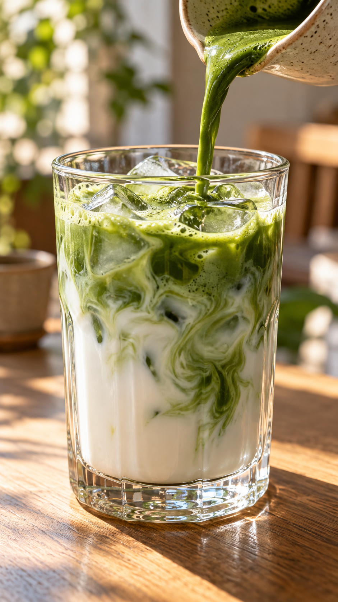
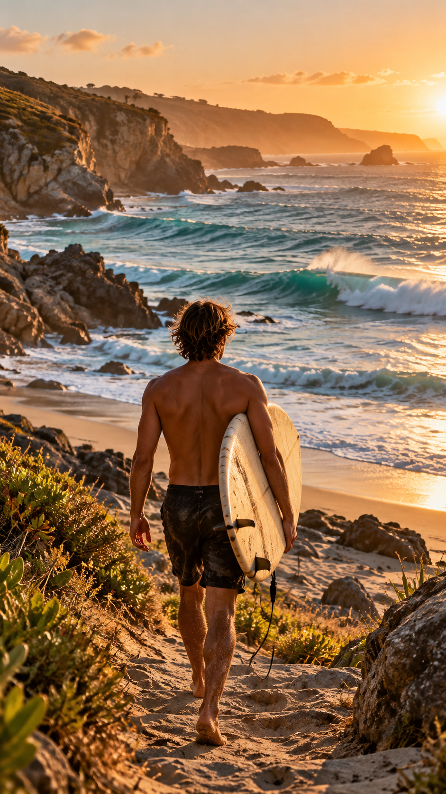
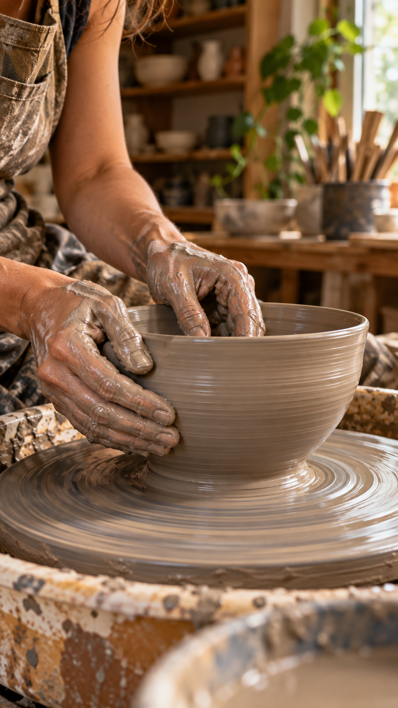
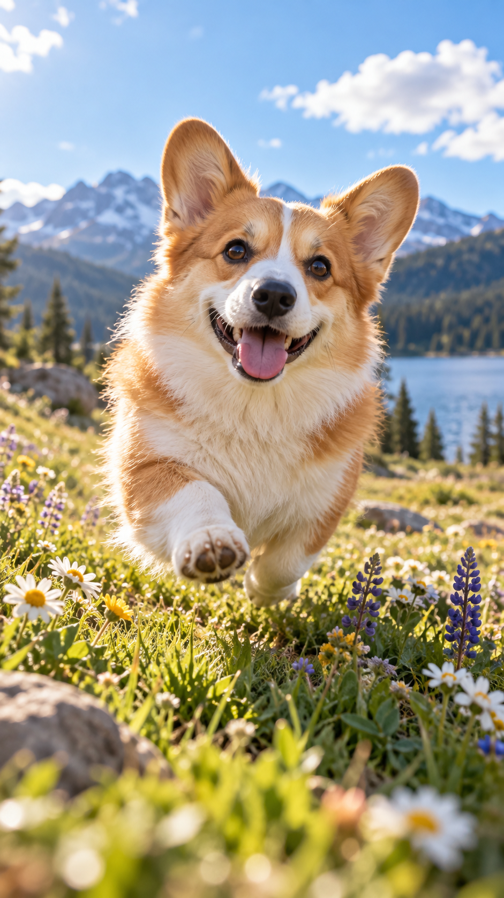
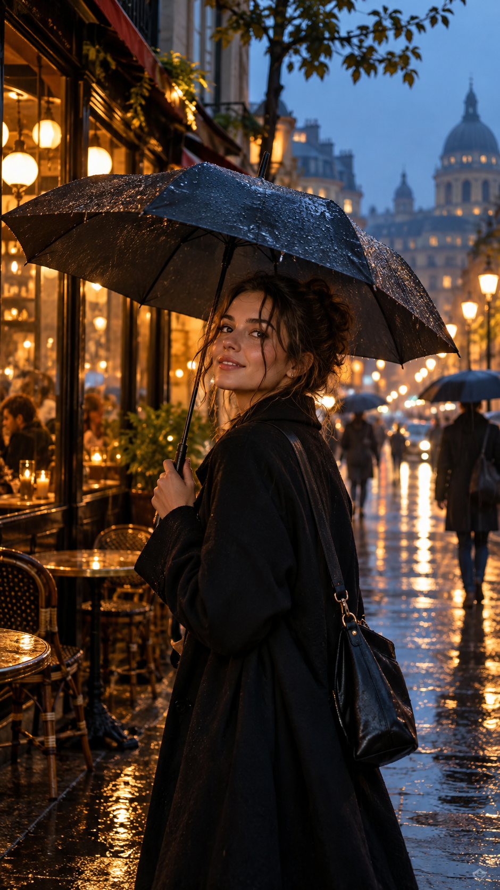

Reels⌄
The best part of the morning. 🍵
sslow.mornings
A little ritual, one pour at a time.
♫ slow.mornings · Original audioScroll up ↑01 / 05

Reels⌄
A slower kind of rush.
ccoastal.days
Chasing the last light.
♫ coastal.days · Original audioScroll up ↑02 / 05

Reels⌄
Trust the process.
sstudio.earth
From a lump of clay to something worth keeping.
♫ studio.earth · Original audioScroll up ↑03 / 05

Reels⌄
No thoughts. Just sunshine.
llittle.paws
Your daily dose of a very good day.
♫ little.paws · Original audioScroll up ↑04 / 05

Reels⌄
The city, after the rain.
aafter.hours
Sometimes the long way home is the right one.
♫ after.hours · Original audioScroll up ↑05 / 05
Take a moment.
You already watched 5 reels.
Do you really want to keep watching?
Release to reset.
Hold Space or Enter for 10 seconds to continue.